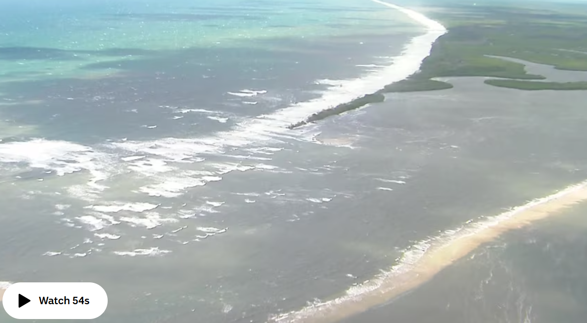
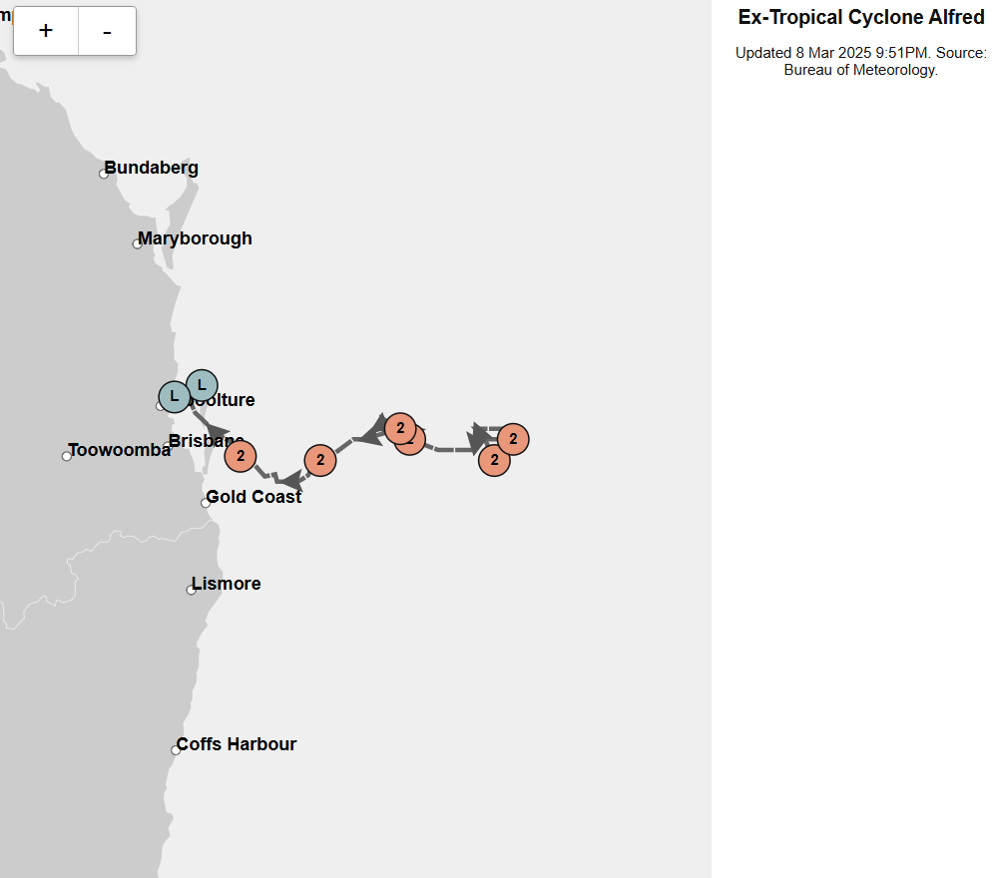

Tropical Cyclone Alfred expected to intensify to category two storm overnight before hitting Qld and NSW coast

Tropical Cyclone Alfred is expected to become a category two storm off the coast of Queensland overnight.
At 4am AEST the cyclone will likely intensify, and conditions are expected to deteriorate further as Alfred approaches the south-east Queensland coast.
Gales with damaging wind gusts of up to 120 kilometres per hour are expected to develop along the coast, according to the Bureau of Meteorology (BOM).

The system could impact heavily populated areas across hundreds of kilometres of coastline in the coming days.
It is likely to cross the Queensland coast late on Thursday or Friday, with authorities warning people from Sandy Cape in Queensland to Grafton in New South Wales to be prepared.